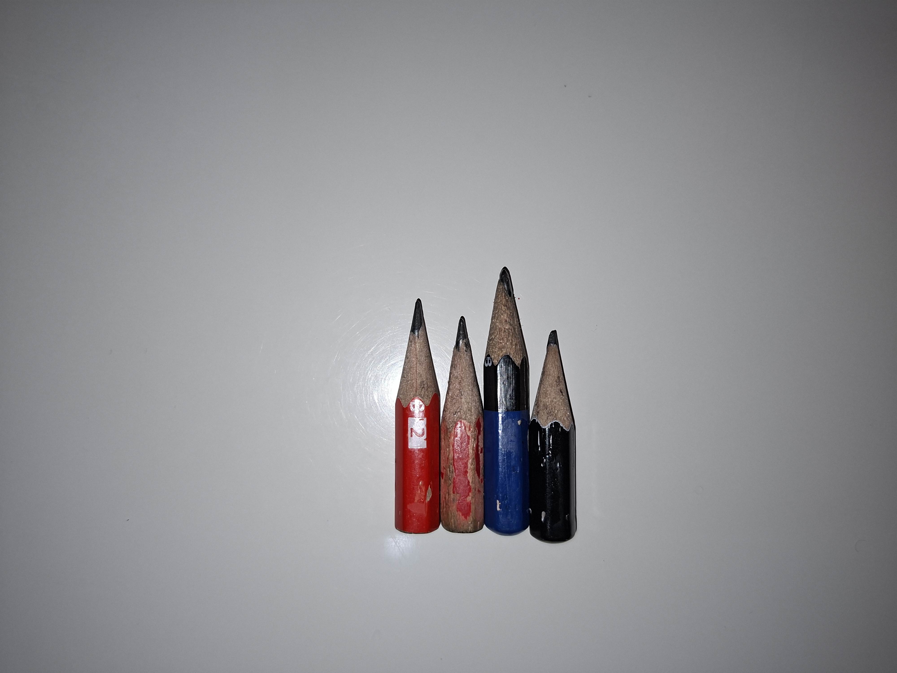

Short pencils
Written by: Matthew
I promise I am not a hoarder
During your many years of school, it is a very difficult to keep possession of your stationary. The most common scenario is when someone asks for a pen from you, and either you forget or the person forgets to give it back to you. No harm done, it isn't anything to get angry about (unless it was a really expensive one, then you have the right to complain). I think there might be a universal law in the universe which states that for every pen produced in the year, at least half of them will be gone by the end of the year.
Thankfully, I got a lot better at keeping track of my stuff as I got older. This is how I got such pencils stubs (see image below).

Let me tell you, if you need attention then whip out one of these bad boys during class and watch people ask you questions left and right on why you have such short pencils. At one point, a teacher asked me if they could take a picture of them because they were "cute". That got a good smile out of me.
It is surprisingly usable once you get used to how stubby the pencils are. I was using it to write down stuff in my physics book and I would argue that it was pretty legible, at least for my eyes.
The Japanese are better than all of us
Someone in Japan made this tool called the "TSUNAGO" which allows you to modify a pencil in such a way to allow you to use it all the way to the stub without compromising ergonomics and accuracy of the writing instrument.
Here is a link to a Youtube video demonstrating how you would use it.
I would love to have one of these, but it seems like they are only sold in Japan. I suspect that the market for such a device is also virtually non-existent, so I don't think it will be going to international markets anytime soon.
Maybe in my dreams will finally use my pencils to their fullest potential...